第 16 章・9,666 字
Harmony, Chords and Accompaniment on the Mandolin （曼陀林的和聲、和弦與伴奏）
曼陀林只有四組弦，這件事反而讓和聲學習變得很直接。
因為一個四音和弦，最多只能在同一時間完整放進四個弦組。 所以你必須做取捨：
這些問題，把「和弦圖」推向真正的編曲與配器思維。
本章從音程、聲部連接（voice leading）、節奏功能與風格用途出發。
你會看到：同一個 G 大調和弦可以有很多種排法；同一個 D7 也不一定非得包含完整的四個音。
藍草切音、古典分解和弦、爵士伴奏（comping）、和弦旋律（chord melody）都使用和弦。 但它們真正需要的聲音，完全不同。
四種基本三和弦（triad）：
這四種基本結構，是所有實際排法的出發點。
當你看到 G7、Gmaj7、G6、G9，最先要知道的仍然是 G–B–D 這個骨架。
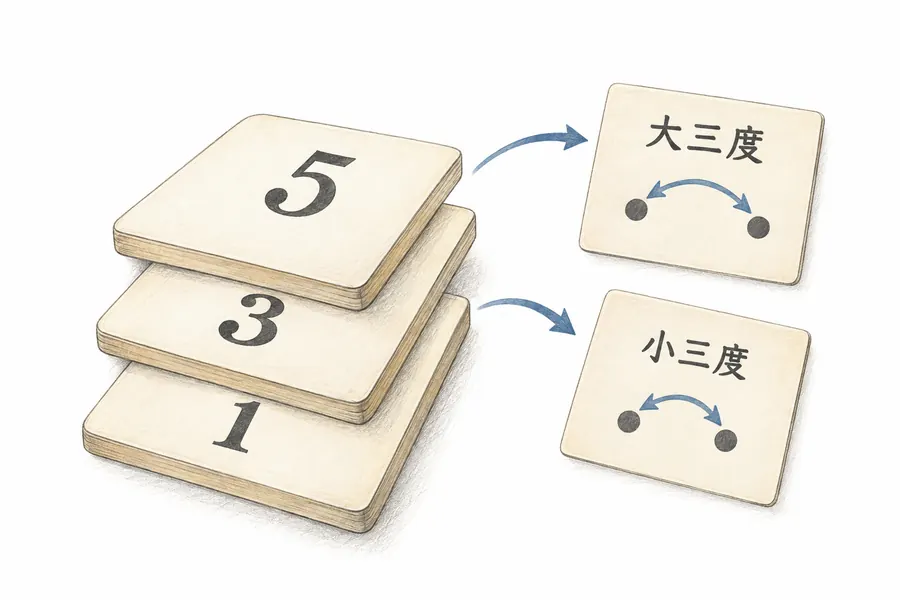
圖解 16.1 三和弦（示意）
在四個弦組上，三和弦自然會出現某個音的重複。
兩者的和弦名稱相同，但聽感不同。
這就是排法（voicing）：和弦音集合相同，不同的排列會改變聲部的重心。
所以當你和低音手一起演奏時，曼陀林可以把有限的弦組，留給第三音、第七音與張力音（tension）。
本節重點： 先認得骨架，再談變化。 練習方向： 理解和弦與伴奏。
曼陀林最低聲部的音，受四弦組的配置限制。 實際演奏時，不一定能像鋼琴那樣完整呈現低音的轉位。
但轉位的概念仍然非常有用，因為它告訴你：這個排法內部的方向是什麼。
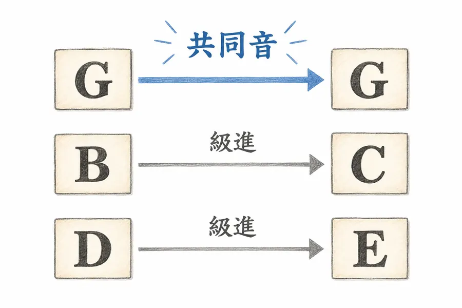
圖解 16.2 和弦轉位與聲部連接（示意）
如果 G 大調之後要到 C 大調，不一定要整隻手跳到另一個很遠的形狀。
可以這樣做：
這種「最小移動」就是聲部連接（voice leading）。
它讓伴奏聽起來像好幾條旋律線自然前進，保留聲部之間的連接。
熟悉開放的 G、C、D 和弦之後，再練習閉合和弦的聲部連接。
選三個閉合排法，試著讓最高聲部走成：
當你開始「聽最高聲部」，就會發現：伴奏其實也是一種旋律設計。
三種常見的七和弦：
這些和弦的差異不只是「色彩」，也改變了功能。
屬七和弦的第三音與第七音，形成三全音（tritone）。 在傳統調性和聲中，這是推向主和弦（tonic）的重要張力來源。
以 D7 到 G 為例：
這兩條半音／全音的解決，比「根音從 D 跳到 G」更能讓耳朵聽出終止式（cadence）。
所以在四弦組的曼陀林上，即使省略第五音 A，只要保留 F# 和 C，和聲功能依然非常清楚。
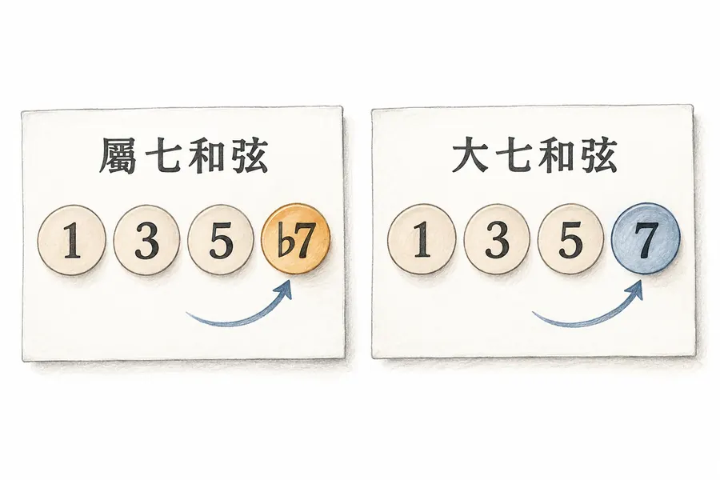
圖解 16.3 七和弦（示意）
m7b5（半減七和弦）與 diminished 7（減七和弦）常見於小調，或作為半音經過和聲（chromatic passing harmony）。
因為它們內部的音程對稱性較高，可移動的形狀特別方便。
但也容易因為只背形狀，而不知道它的功能。
每次學新的減七形狀，都要問一句： 「它在什麼調裡，解決到哪個和弦？」
本節重點： 保留三音與七音，功能就清楚了。 練習方向： 理解和弦與伴奏。
理論上，13 和弦可以包含 1–3–5–b7–9–11–13，多達七個不同的級數。
四弦組的曼陀林，不可能完整發出。
真正的爵士／流行排法，會有意省略不重要的音。
它保留的是兩種東西：
G13 可以只用 B–F–E–A：
這裡沒有根音 G，也沒有第五音 D。
如果低音已經提供了 G，聽感仍然成立。 相反地，如果是無低音的獨奏，完全省略根音可能讓聽者失去方向。
所以排法必須依合奏情境（ensemble context）決定，同時確認低音與其他聲部的分工。
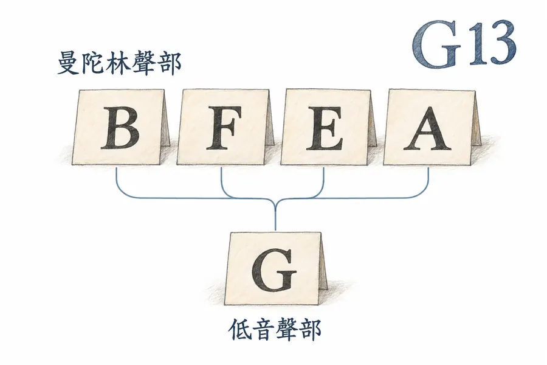
圖解 16.4 六和弦與延伸和弦（示意）
字面上只差一點，功能與聽感卻不同。
讀和弦記號時，先把音程拆出來，比直接查和弦字典可靠。
本節重點： 四條弦就是不夠，所以要懂得「有意識地省」。 練習方向： 理解和弦與伴奏。
G–D–A–E 的空弦，對 G、D、A、E 等調非常友善。
這也是小提琴曲（fiddle tunes）、藍草、塞爾特（Celtic）曲目，常常利用持續音（drone）的結構原因之一。
空弦不只省力，還有不同於按弦音的起音與延音，能讓音色更開放。
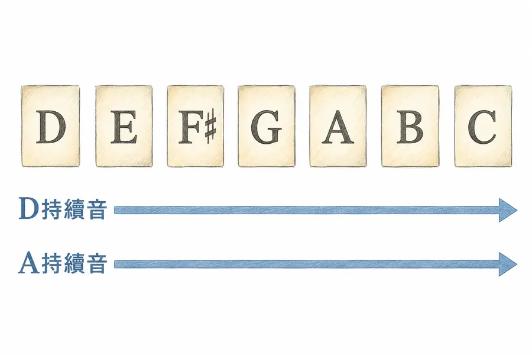
圖解 16.5 開放和弦與持續音（示意）
某個利用空弦 G／D 的漂亮 G 和弦，移到 Ab 就無法整體平移。
這正是閉合形狀（closed shape）的價值。
演奏者應該把「開放排法」和「可移動排法」視為兩套工具，依音色與調性選擇使用。
持續音還能在調式音樂（modal music）中提供調中心（tonal center）。
例如在 D 米克索利地安（Mixolydian）的旋律上持續開放的 D／A，會比每小節換完整的功能和弦，更符合某些民謠語法。
這提醒我們一件事 和聲不一定等於「每一拍都堆和弦」。 有時候一個持續音，就足以建立整個空間。 常見誤解 「和弦越多、越滿，伴奏就越專業。」 不一定。曼陀林只有四組弦，塞滿反而會和吉他、低音打架。
這提醒我們一件事 和聲不一定等於「每一拍都堆和弦」。 有時候一個持續音，就足以建立整個空間。
常見誤解 「和弦越多、越滿，伴奏就越專業。」 不一定。曼陀林只有四組弦，塞滿反而會和吉他、低音打架。
本節重點： 空弦好聽，但不能移動。 練習方向： 理解和弦與伴奏。
閉合和弦（closed chord）指的是：所有需要的聲音都由按住的音產生，沒有依賴空弦。
好處是整個形狀可以沿著指板移動，特別適合：
而且因為所有音都在左手控制下，放開（release）也能非常整齊。
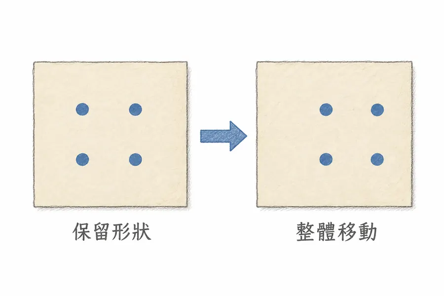
圖解 16.6 可移動形狀的概念；圓點表示相對位置（示意）
閉合形狀常要求更大的伸展，尤其在低把位。
如果只追求「標準的切音形狀」，手小的演奏者可能長期維持不自然的跨度。
替代方案有三個：
功能比固定形狀重要。
把「半音移動」和「常見的和聲進行」搭配在一起。
最好配合五度圈（circle of fifths）：
這會把手型和實際的和聲移動連起來。
本節重點： 能移動是最大優點，伸展是最大成本。 練習方向： 理解和弦與伴奏。
藍草切音常在第 2、4 拍形成短促的後拍。
這時候，排法最大的要求是：
閉合形狀因此非常合適。
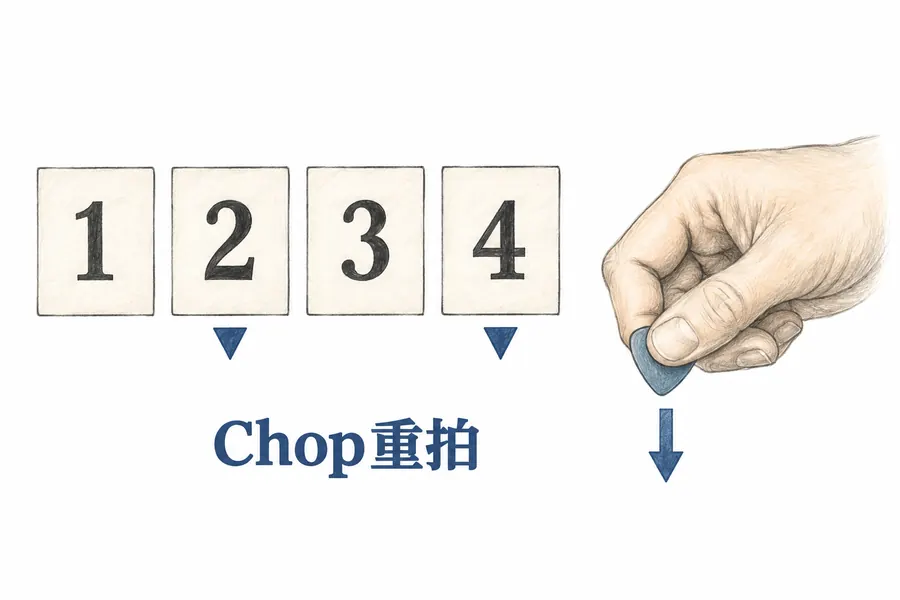
圖解 16.7 Chop 和弦配置（示意）
典型的切音和弦常省略重複音，讓四個弦組都有足夠的張力，而且手形可以控制。
不同演奏者會依調性、琴頸位置與個人手型選排法。 沒有唯一一種「Monroe chord」（門羅和弦）。
Bill Monroe 在藍草歷史中的核心地位，是確立曼陀林主奏／節奏語法的重要背景。 但後世的切音技術，已經發展出多種手型與時間安排。〔S1601〕
曼陀林不需要把每個拍子都填滿。
切音的價值，常在吉他的刷弦之間出現，形成互補。
如果兩件樂器同時在每一拍做大和弦，頻譜與節奏都會變得擁擠。
本節重點： 切音要和吉他「錯開」，不是疊上去。 練習方向： 理解和弦與伴奏。
在大調中，各級和弦有不同功能：
這套功能思維，能把幾百個和弦進行壓縮成少數幾個方向：
離家 → 增加張力 → 回家。
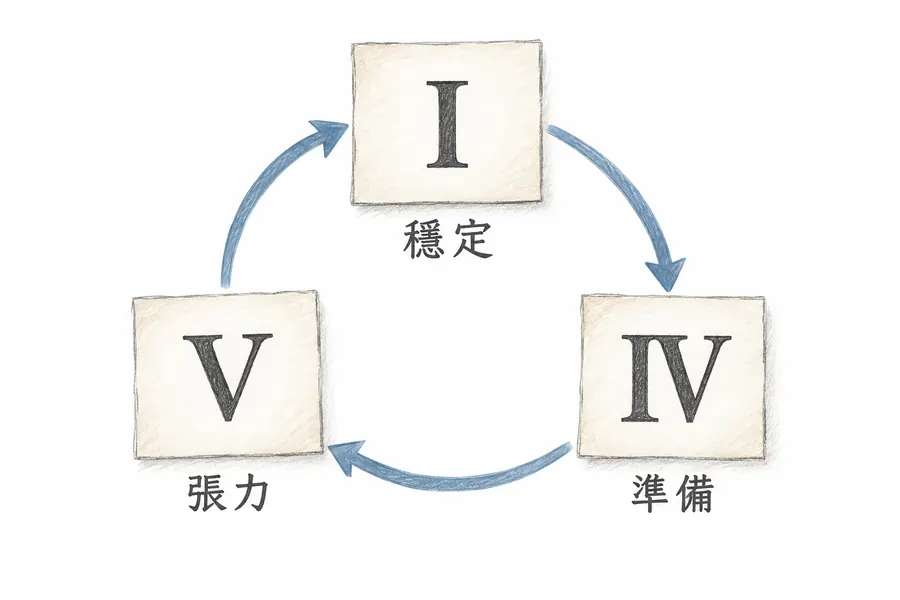
圖解 16.8 功能和聲（示意）
看起來有四個和弦，實際上可以理解成「主和弦區逐步走向屬和弦」。
曼陀林伴奏時，便能用聲部連接把內聲部連起來，讓相鄰的和弦以較小的幅度移動。
小調更複雜，因為和聲小音階（harmonic minor）常升高第七級，製造屬和弦的導音（leading tone）。
所以看到 E7 出現在 A 小調，不應該驚訝：G# 就是為了推向 A。
把這些音程關係理解之後，和弦記號便能顯示聲部走向與功能。
本節重點： 和弦進行就是「離家與回家」的路線圖。 練習方向： 理解和弦與伴奏。
最基本的十二小節藍調（12-bar blues），可以用 I7–IV7–V7 組成。 但不同地區與年代，有大量變體。
對曼陀林而言，學藍調的價值不只在和弦，還包括：
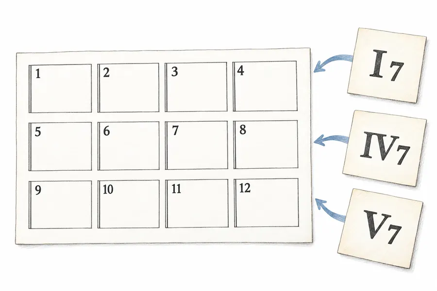
圖解 16.9 十二小節藍調（示意）
主奏時，在 I7 上使用小調五聲音階（minor pentatonic）來製造藍調張力很常見。 但到了 IV7、V7 時，如果能用和弦音（chord tones）標示變化，獨奏會更有方向。
即興的重要原則 音階是素材，不是和聲的答案。 每一個和弦的第三音、第七音，都能提供更清楚的和聲地標（harmonic landmark）。
本節重點： 藍調不是只有和弦，還有節奏語言。 練習方向： 理解和弦與伴奏。
多利安（Dorian）、米克索利地安（Mixolydian）等調式（mode），在民謠裡很常見。
塞爾特與老時光（old-time）音樂也用得很多。
它們有明確的調中心，但和傳統大調／小調的功能和聲不完全相同。
例如 D 米克索利地安有 C 本位（C natural）。 如果硬用 A 大調（含 C#）當屬和弦，就會改變原本的調式色彩。
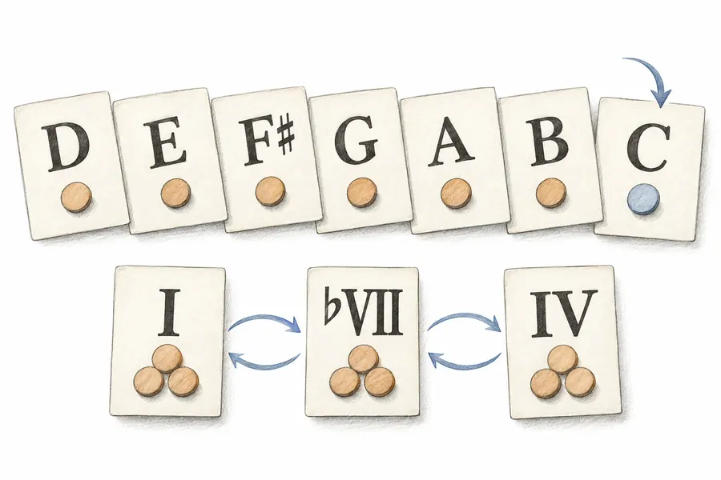
圖解 16.10 D Mixolydian音階與可用和聲材料（示意）
這類音樂常依賴：
曼陀林的空弦特別適合這種語法。
理解調式最好的方法，是以大調音階為基準，看哪一個級數被改變了，然後聽這個改變如何影響可用的和弦。
功能和聲與調式和聲可以混合，但必須是有意識的選擇。
兩者的差別，是風格選擇。
本節重點： 調式音樂的重點是「哪個音被改變了」。 練習方向： 理解和弦與伴奏。
和弦旋律（chord melody）的核心是：
讓最高音（top note）清楚保持旋律，再用剩下的弦組，選擇最少但有效的和聲。
如果低聲部移動太多，聽者會把注意力轉向和弦變化，旋律反而被埋掉。
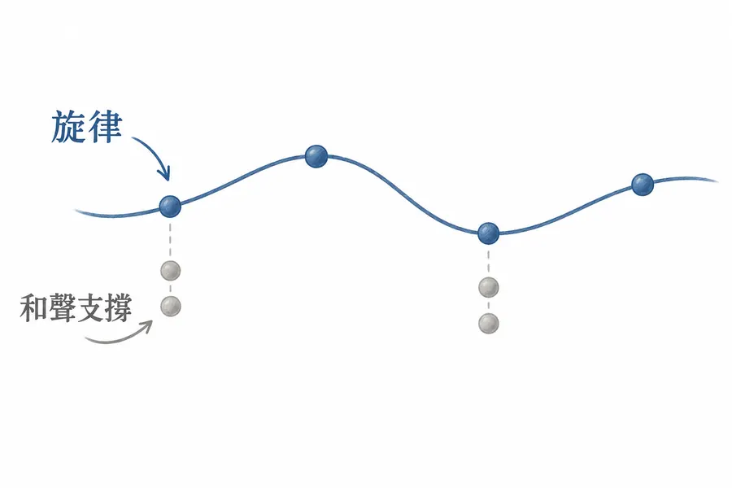
圖解 16.11 和弦旋律（示意）
這種「疏密」的安排，比全程四音塊狀和弦，更像撥弦樂器自然的織度（texture）。
這還多一層問題：哪些聲部需要持續、哪些只需要一次起音？
把右手的織度分層，會比全程同樣密度更有呼吸。
本節重點： 旋律優先，和聲是支援。 練習方向： 理解和弦與伴奏。
以 G–C–D 為例，同一個和弦進行可以有四種完全不同的做法。
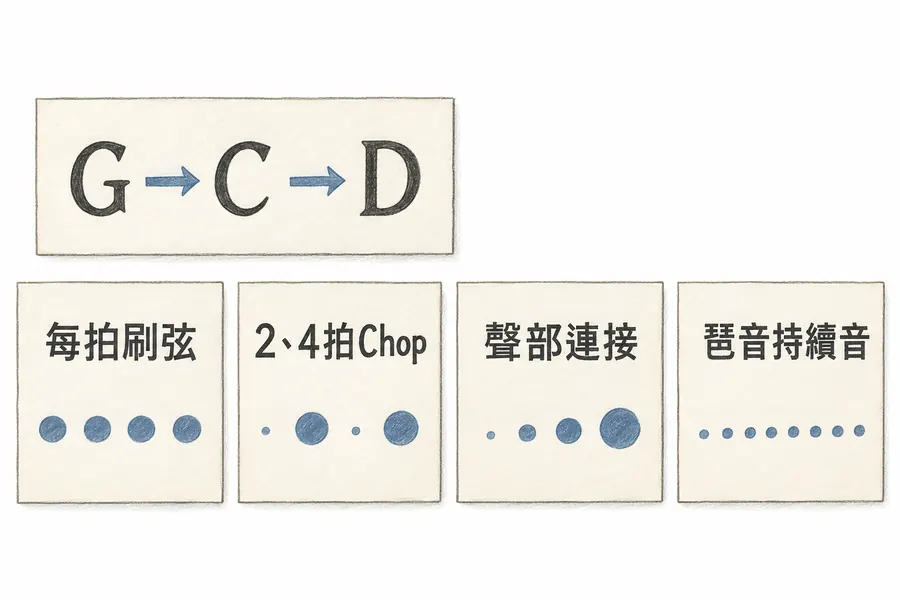
圖解 16.12 案例 I IV V 的伴奏選擇（示意）
和弦名稱完全相同，但真正改變風格的是：
這就是為什麼：學會一百個和弦形狀，不等於會伴奏。 常見誤解 「背完和弦表就會伴奏了。」 背形狀只是第一步。真正決定風格的是音長、節奏與樂團裡的空間。
這就是為什麼：學會一百個和弦形狀，不等於會伴奏。
常見誤解 「背完和弦表就會伴奏了。」 背形狀只是第一步。真正決定風格的是音長、節奏與樂團裡的空間。
固定同一個和弦進行，連續做四種織度，並且全部錄音。
如果每一版只是音量不同，而節奏語法沒變，代表你仍在「換和弦」，而不是在「設計伴奏」。
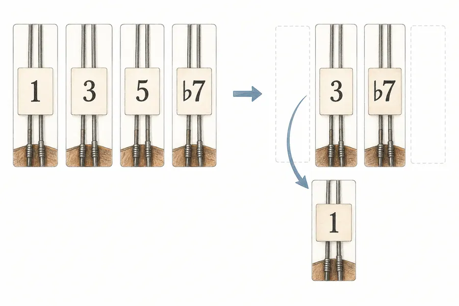
圖解 表 16-1｜常用和弦公式與四 course 取捨（示意）
學習檢查：作答、核對、複習
先自己作答，再看答案。答錯時回到本章相關小節重新讀一次。
1. Major triad 的組成音程是？
A. 1–3–5
B. 1–♭3–5
C. 1–4–5
D. 1–2–6
2. 轉位在實際伴奏上的重要用途是？
A. 讓和弦連接更順
B. 讓琴弦變粗
C. 提高琴橋
D. 改變木材
3. Chord melody 最重要的是？
A. 讓旋律音清楚，和聲支援它
B. 每個音都塞最大和弦
C. 只保留低音
D. 完全不管旋律
答案：1.A 2.A 3.A
查證來源：找原文、核條件、留紀錄
【S1601】Bluegrass Music Hall of Fame & Museum：Bill Monroe biography。 Bluegrass 形成與 mandolin 的 ensemble 角色背景。
https://www.bluegrasshall.org/inductees/bill-monroe/